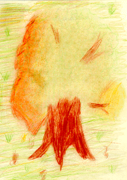

Student Project
Gabriele

The Oak of the Devil
"Long ago in a deep ooze there lived the Devil. He enjoyed food, and that is why others called him 'Fatty'! Once, the Fatty ran out of food and stepped into the god Perkunas garden. He picked up some vegetables and started eating. The god Perkunas (Thunder) saw the Fatty and was enraged: ' How dare you to eat things from my garden!! ' The Thunder turned vegetables into a sack of acorns. The 'Fatty' grabbed the sack and ran away. The Thunder went after him, but in vain. As The Devil ran, he last all his acorns. That is why Silute is full of oaks."
© Gabriele, 6a cl., 12 y.old
Silute, LITHUANIA
Pastel Drawing 9 "X12"
Pagryniu Oak
Common Name: Oak
Latin Name: Quercus
Age: Unkown
Circumference: 5 meters
Height: 25 meters
Location: Silute, LITHUANIA
 Return to Main Page
Return to Main Page
Comments
Please send e-mail to: June Julian jj68@nyu.edu